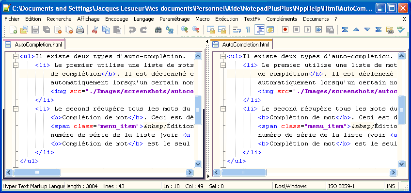

Texto original
Sugiere una traducción mejor
| Anterior: Ocultar líneas | Viendo | Siguiente: System Bar |

Puede activar una ventana de edición secundaria en Notepad ++ para poder mostrar dos veces el mismo documento (o dos documentos diferentes). Si usa esta función con el mismo documento, puede comparar rápidamente documentos o realizar cambios en dos lugares al mismo tiempo sin tener que desplazarse ni marcar. Para usar la opción Vista múltiple, habilite el documento que desea mostrar en la otra vista.
También puede acceder a estos comandos haciendo clic con el botón derecho en la pestaña de un documento y seleccionando el comando desde el menú contextual. Tenga en cuenta que estas opciones también están disponibles al arrastrar una pestaña en un cuadro de edición, con la tecla Ctrl presionada para clonar y no presionada para un movimiento.
Una vez que tenga habilitada su vista múltiple, puede controlar su diseño. Puede arrastrar el separador con el mouse o hacer clic en las flechas pequeñas en la parte superior e inferior para completar el movimiento hacia la izquierda o hacia la derecha. Un botón derecho del ratón en el divisor muestra un menú contextual que le permite rotar la disposición de un cuarto de vuelta.
Aunque puede ver dos documentos al mismo tiempo, solo uno puede estar activo (tener foco). Puede determinar la vista activa utilizando la barra de pestañas si activó las líneas de color de las pestañas (consulte la barra de pestañas del menú Preferencias ). De forma predeterminada, la pestaña activa de la vista activa tiene una barra de color distinta de la de la otra pestaña activa. Además, solo la vista activa puede tener el punto de inserción. Puede cambiar la vista activa .
La vista activa determina Si tiene el mismo documento abierto en dos vistas, comparten algunas propiedades, pero algunas se pueden cambiar de forma independiente:
Si abre un nuevo documento o archivo, estará en la vista actualmente activa. Además, al cerrar, incluso moviendo la última pestaña, el último documento en una vista cerrará esa vista.
Para facilitar la comparación de dos documentos, puede habilitar el bloqueo de desplazamiento en el modo Vista múltiple. Si este bloqueo está habilitado, al desplazarse por una vista se desplazará automáticamente la otra. El bloqueo intentará mantener la posición actual. Esto significa que si un punto de vista se desplaza 5 líneas más abajo que el otro, el desplazamiento vertical bloqueará esta distancia a menos que no sea posible. Tan pronto como pueda, encontrará el cambio correcto.
Para habilitar el bloqueo de desplazamiento horizontal, seleccione o presione el botón . Para bloquear el desplazamiento vertical, seleccione o presione el botón .